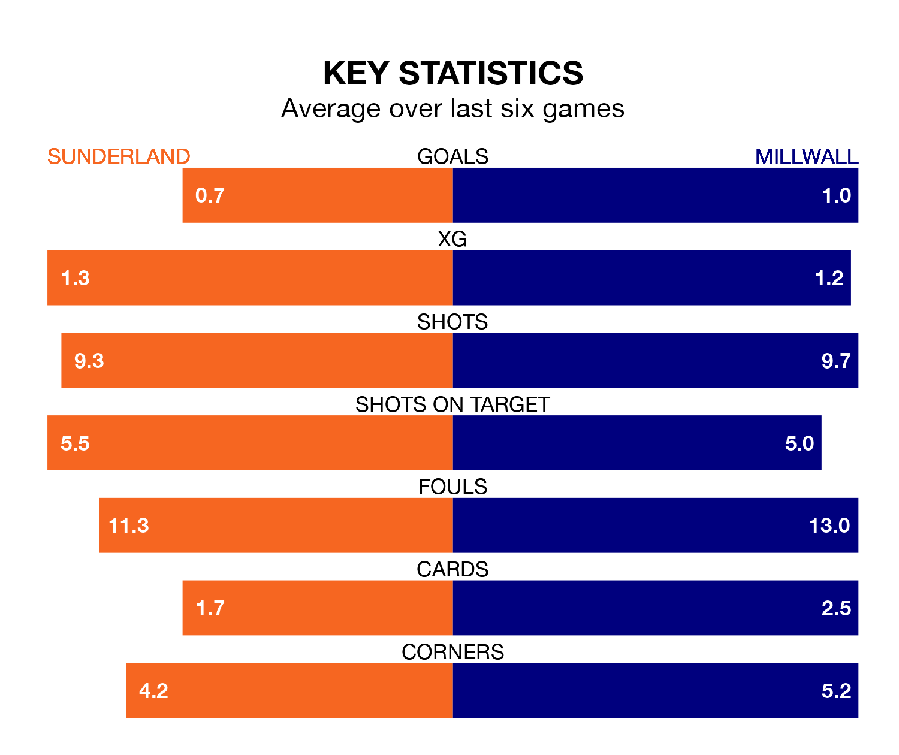

Sunderland host Millwall on Saturday at the Stadium of Light in EFL Championship.
In their last league match, on April 13, Sunderland beat West Bromwich Albion 1-0 away, with their goal scored by Pierre Ekwah.
Millwall also won, 3-1 at home against Cardiff City, with Duncan Watmore, Jake Cooper and Michael Obafemi on the scoresheet.
In Anthony Patterson, Sunderland can rely on one of the league's safest pair of hands. He has kept 13 clean sheets in his 43 appearances this season in EFL Championship.
In Millwall's net, Matija Šarkić has nine clean sheets in 29 games.
With 42 goals in 43 games so far this season, the Lions are scoring at below the league average rate with 1.0 goals per game. And they are conceding at an average rate, letting in 55 goals at a rate of 1.3 per game.
The Black Cats are also below average scorers, with 1.2 goals per game, compared to a league average of 1.3. They have also conceded 1.2 goals per game.
The away side are 16th in the table after 43 games, of which they have won 13 and drawn 11, earning 50 points.
The hosts are three places ahead of Millwall in 13th, with 16 wins and eight draws putting them on 56 points.
Sunderland are in mixed form in EFL Championship, with two wins and three draws from their last six games.
With two wins and a draw over that period, Millwall's form is slightly worse – they have taken seven points from 18, compared to Sunderland's nine.
In the last three years, Sunderland and Millwall have played each other on three occasions. Sunderland won one of them and they drew the other.
Their last meeting was on December 2, when they played out a 1-1 draw.
Saturday's match will be refereed by Anthony Backhouse, who has taken charge of 10 EFL Championship games so far this season, issuing no red cards and booking 53 players. He has awarded two penalties.
The last Sunderland game Backhouse refereed was a 3-1 home win against Plymouth Argyle on February 10. His last Millwall match was their 1-0 loss away at Hull City on February 3.
Updated: 15:40 (UTC), 18/04/24